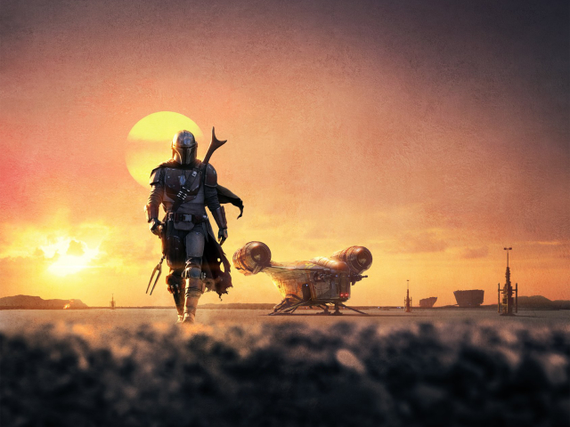
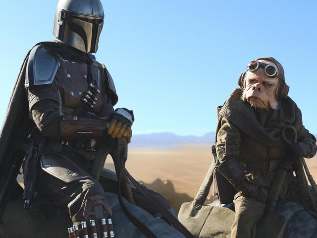
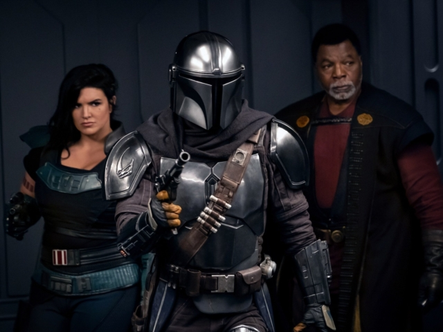
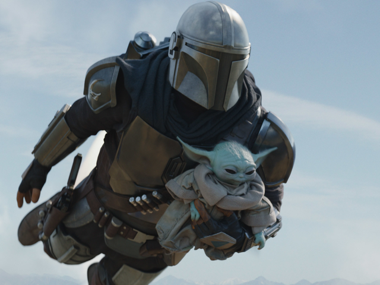
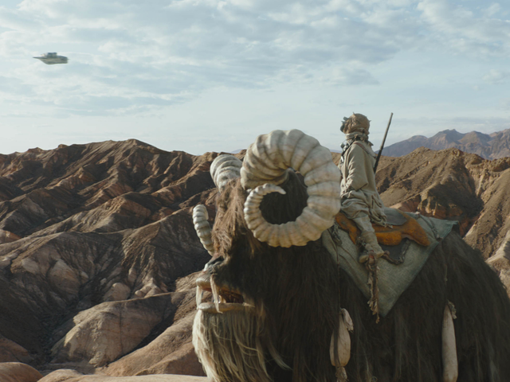

Érdekességek

A múlt árnyékában
A börtön, ahol az epizód kezdett, már csak azért is izgalmas volt, mert láthattuk,
ahogy az Új Köztársaság daruként újrahasznosított AT-AT-k segítségével bontotta a roncsként heverő
TIE vadászokat. Ez a jelenetsor a lázadók és a Birodalom pár évvel ezelőtt
még javában dúló csatáira emlékeztette a nézőket, és egy pillanatra visszaköszönt a véres múlt.
A beépülés klasszikus Star Wars-os húzás
A Star Wars világában mostanra tradíciónak számít, hogy a főhősök rohamosztagosnak öltöznek,
és így szivárognak be a birodalmiak létesítményeibe és űrhajóiba. Luke Skywalker (Mark Hamill)
és Han Solo (Harrison Ford) is ezt tették, amikor Leia hercegnőt (Carrie Fisher) kimenekítették
a Halálcsillagról. A Zsivány Egyesben pedig Jyn Erso (Felicity Jones) és Cassian Andor
(Diego Luna) tettek hasonlóan, amikor a Halálcsillag terveit lovasították meg.
Az új trilógiában Finn (John Boyega) és Rose (Kelly Marie Tran) próbálkozott hasonló manőverrel,
a The Mandalorianben pedig Din Djarin
és Mayfeld szivárogtak be az ex-birodalmiak közé egy veszélyes üldözést követően.

A Trónok harca Éjkirálya is beköszönt
A birodalmi tisztet, Valin Hesst alakító Richard Brake sokak számára
ismerős lehetett, hiszen a színész a Trónok harca 6. évadáig az Éjkirályt
alakította az HBO-s sorozatban. Közte és Havas Jon között volt egy brutális összecsapás is,
amely rendkívül emlékezetesre sikerült. Brake most is jól hozta a félelmetes hadvezért,
nagy kár, hogy Mayfeld végül lelőtte és nem láthatjuk többet Valin Hesst gonoszkodni.

Palpatine brutális hadművelete is kapott egy utalást
Az Operaton: Cinderről valószínűleg csak azok hallottak az epizód előtt,
akik az elmúlt években nagyon beleásták magukat a messzi-messzi galaxis világába.
A Star Wars: Battlefront II című videojáték főszereplője, Iden Versio (Janina Gavankar)
emiatt a hadművelet miatt fordult el a Birodalomtól, melynek lényege az volt, hogy
Palpatine meghagyta, hogy esetleges halála után egy csomó bolygót tegyenek lakhatatlanná
úgy, hogy a körülöttük lebegő műholdakkal felborítják az időjárásukat. Az Operation:
Cinder során rengeteg ártatlan halt meg, a Birodalom a
saját katonáit is hajlandó volt feláldozni csak azért, hogy legyőzzék a lázadókat.

Jango Fettet is megidézték
Miután Din Djarin és Mayfeld elmenekültek a birodalmi bázisról, két
TIE vadász kezdte üldözni a Slave I-et. Ekkor jött Boba Fett (Temuera Morrison)
húzása, amely a mozifilmek rajongóinak ismerős lehetett, hiszen a legendás fejvadász
egy szeizmikus töltettel csinálta ki az őket követő űrhajókat. Ehhez kísértetiesen
hasonlító jelenet volt látható az előzménytrilógia második részében, A klónok
támadásában, amikor Jango Fett, akit ugyancsak Morrison játszott, a még gyermek
Bobával együtt menekült Obi-Wan Kenobi (Ewan McGregor) elől,
és egy ugyanilyen szeizmikus töltettel igyekeztek lerázni a jedi-mestert.

Az új trilógia vadászpilótája
A The Mandalorian stáblistáját főleg azért érdemes mindig megnézni,
mert lenyűgöző koncepciós rajzokat mutogatnak nekünk a lezáró képsorokban.
Általában az epizód leglátványosabb jeleneteit láthatjuk, még a tervezés pillanatában,
mielőtt leforgatták volna őket. Az üldözős jelenet, amely köré a 15. fejezet épült, az
egyik leglátványosabb akció volt eddig a sorozatban, érdekes módon viszont a végefőcím
koncepciós képein Poe Dameront (Oscar Isaac) rajzolták oda az idegen lények helyett.
Egyelőre senkinek nem tiszta, hogy mi lehetett ezzel a kikacsintással
az alkotók célja, de első nézésre valószínűleg keveseknek tűnt fel a dolog.